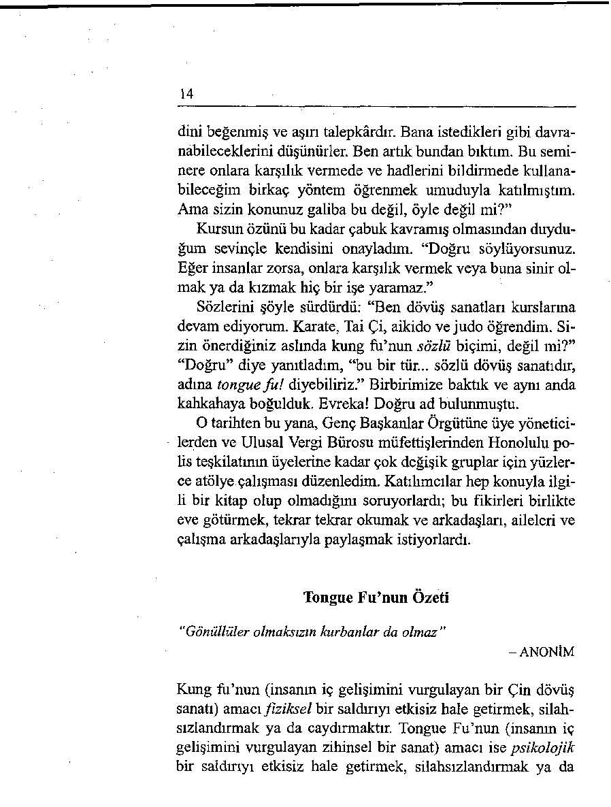
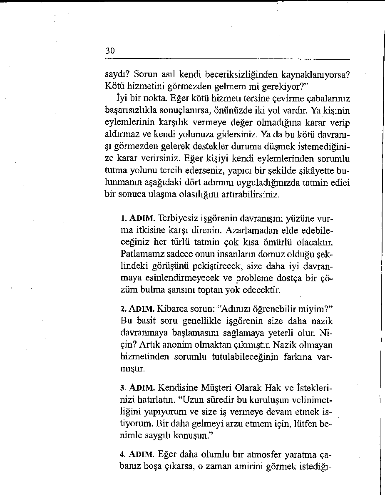
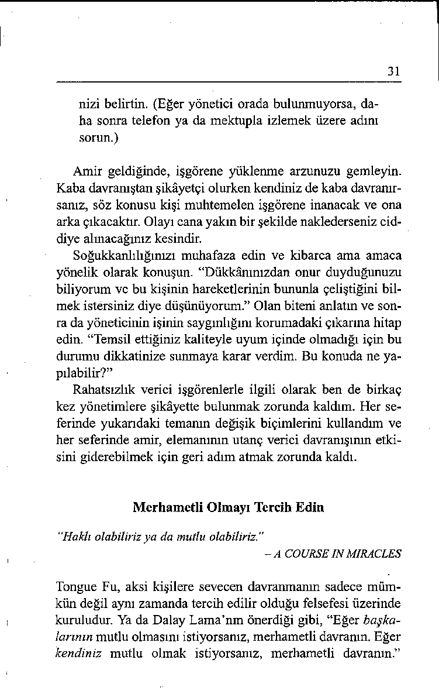
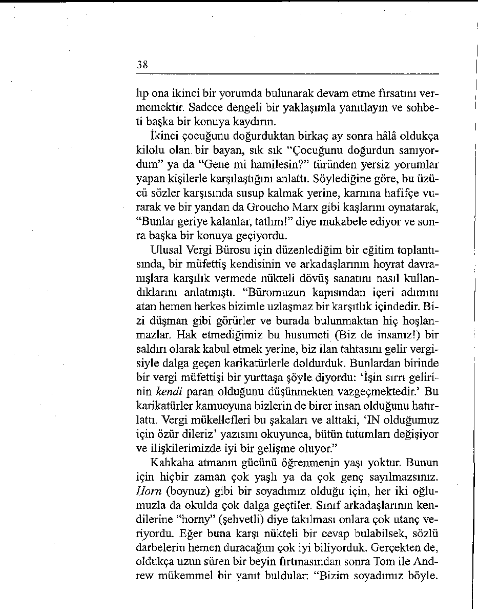

21. Muharebelerinizi Kendiniz Seçin
24. Güven Duyun ve Öyle Davranın
27. İnsanlara Taze Bir Başlangıç Olanağı Verin
28. Duygularınızın Yönetimini Üstlenin
29. Olumlu Bir Bakış Açınız Olsun
Sotısöz: Niyetleri Eyleme Dönüştürün
“ZENGİNLİĞİNİZ DOSTLARINIZ OLSUN.”
- WILLIAM SHAKESPEARE
Dostlarım bakımından gerçekten de zengin sayılırım ve Tongue Fu’yu hayata geçirmede bana yardımcı olmuş bazı insanlara teşekkür etmek isterim.
Hawaii Üniversitesinden program uzmanı Dr. Ray Oshiro’ya, konferansçılık kariyerimde bana en başından destek olduğu ve 1989’da benden zor insanlarla başa çıkma konusunda bir kurs hazırlamamı isteyerek beni bu yola yönlendirdiği için şükran duyuyorum.
Action Seminar’m değerli yöneticisi Karen Waggoner’e
firmayı yönettiği ve bana sineğiyle ilgili her şeyi öğrettiği için
teşekkür ediyorum. İki akıl (hele biri Karen’inkiyse) her zaman tek akıldan daha iyidir.
Mau Yazarlar Konferansı kurucu ve yöneticileri John ve
Shannon Tullius’a yazarlık kariyerimde esin kaynağı olan bu
dünya kalitesindeki olayı yaratacak vizyona sahip oldukları
için müteşekkirim.
Olağanüstü ve saygın koruyucu meleklerim, yayıncılar
Michael Larsen ve Elizabeth Pomada’ya, bu kitabın müsveddelerini “Çok daha iyisini yapabilirsin” diyerek birkaç kez geri çevirdikleri için hayranlık duyuyorum.
Her yazarın hayalindeki editör olan St. Martin’s Press’den
Jennifer Enderlin’e bu projeye gösterdiği çoşku ve ısrardan
dolayı teşekkür ediyorum.
Ve kızkardeşim Cheri Grimm’e teşekkür ediyorum. Hayatımdaki değişmeyen olan Mahalo’ya minnettarım. Birlikte yaptığımız kırk yılı aşkın yolculuk ve hiçbir zaman eksik etmediğin destek benim için hazine değerindedir.
Bu kitabın nasıl yazıldığını merak ediyor musunuz?
1989’de, eğitim programları uzmanı olan Dr. Ray Oshiro
benden Hawaii Üniversitesi için zor insanlara nasıl davranmak
gerektiği konusunda kamuya açık bir atölye çalışması düzenlememi rica etmişti. İkimiz de aynı eğilimi saptamıştık: Kuruluşlar, işgörenlerinin kaba müşterilerle ve işbirliğine açık olmayan çalışma arkadaşlarıyla başa çıkmayı öğrenmesi için giderek daha çok eğitim talep ediyorlardı.
Bu kursun programını oluştururken, çoğu insanın zor davranışlarla uğraşmaya niçin son derece hazırlıksız olduğunu anladım. Çatışma çözümü, tarih, matematik ya da fen bilgileri gibi okullarda öğretilmiyordu. Bu yüzden, birisi kendilerine kötü davrandığında insanlar ne yapacaklarını ya da ne söyleyeceklerini bilemiyorlar. Çoğu zaman ya aynıyla mukabele ediyor ya da sessiz kalıp acı çekiyorlar. Her ikisi de bir işe yaramıyor.
Amacım, insanlann günlük temelde karşılaştığı meydan
okumalara anında yanıt vermede kullanabileceği gerçek ya şam seçenekleri geliştirebilmekti. Teorilerle zaman harcamak
istemiyordum. Birisi size bağırdığında ya da ilginiz olmayan
bir konuda sizi suçladığında bayağı sözlerle yanıt vermenin
bir yararı olmaz.
Seminere başladığımızda daha ilk derste doğru yolda oldu ğumuzu gördüm. Kahve molasında katılımcılardan biri yerinden kalkmamıştı. Sandalyesinde oturmuş başını sallıyor ve uzaklara bakıyordu. Yanına yaklaşıp ne düşündüğünü sordum.
“Sam” dedi, “ben emlakçıyım. Bazı müşterilerim çok ken 
14
dini beğenmiş ve aşırı talepkârdır. Bana istedikleri gibi davranabileceklerini düşünürler. Ben artık bundan bıktım. Bu seminere onlara karşılık vermede ve hadlerini bildirmede kullanabileceğim birkaç yöntem öğrenmek umuduyla katılmıştım.
Ama sizin konunuz galiba bu değil, öyle değil mi?”
Kursun özünü bu kadar çabuk kavramış olmasından duydu ğum sevinçle kendisini onayladım. “Doğru söylüyorsunuz.
Eğer insanlar zorsa, onlara karşılık vermek veya buna sinir olmak ya da kızmak hiç bir işe yaramaz.”
Sözlerini şöyle sürdürdü: “Ben dövüş sanatları kurslarına
devam ediyorum. Karate, Tai Çi, aikido ve judo öğrendim. Sizin önerdiğiniz aslında kung fu’nun sözlü biçimi, değil mi?”
“Doğru” diye yanıtladım, “bu bir tür... sözlü dövüş sanatıdır,
adına tongue fu ! diyebiliriz.” Birbirimize baktık ve aynı anda
kahkahaya boğulduk. Evreka! Doğru ad bulunmuştu.
O tarihten bu yana, Genç Başkanlar Örgütüne üye yöneticilerden ve Ulusal Vergi Bürosu müfettişlerinden Honolulu polis teşkilatının üyelerine kadar çok değişik gruplar için yüzlerce atölye çalışması düzenledim. Katılımcılar hep konuyla ilgili bir kitap olup olmadığım soruyorlardı; bu fikirleri birlikte eve götürmek, tekrar tekrar okumak ve arkadaşları, aileleri ve çalışma arkadaşlarıyla paylaşmak istiyorlardı.
Tongue Fu’nun Özeti
“Gönüllüler olmaksızın kurbanlar da olmaz ”
- A N O N İM
Kung fu’nun (insanın iç gelişimini vurgulayan bir Çin dövüş
sanatı) amacı fiziksel bir saldırıyı etkisiz hale getirmek, silahsızlandırmak ya da caydırmaktır. Tongue Fu’nun (insanın iç gelişimini vurgulayan zihinsel bir sanat) amacı ise psikolojik bir saldırıyı etkisiz hale getirmek, silahsızlandırmak ya da
15
caydırmaktır. Özsavumnamn sözlü biçimidir; acı sözler söylemek ya da susup kalmak yerine başvurulabilecek yapıcı bir se çenektir.
Sözlü dövüş sanatının asıl amacı, kendinizi sözlü saldırılara hedef olmaktan koruyacak şekilde nasıl güven içinde davranacağınızı öğrenmektir. Ama kışkırtıldığınızda da, bu zihinsel ve dilsel dövüş sanatlarını ustaca kullanarak kendinizi koruyabilmelisiniz. Bundan böyle bir saldırı karşısında hiçbir zaman kendinizi yıkılmış ve çaresiz hissetmeyeceksiniz.
Tongue Fu, sadece adil ya da dürüst olmayan davranışlara
karşı koymakla ilgili değildir. Aynı zamanda bir yaşam felsefesi; hem işinizde hem de dışarıda herkesle daha iyi geçinmenize yardımcı olabilecek bir iletişim tarzıdır. Çatışmaları nasıl önleyeceğinizi, nasıl işbirliği oluşturacağınızı ve başkaları dü şüncesiz ya da kaba davrandığında bile nasıl nazik kalmayı
tercih edebileceğinizi öğreneceksiniz.
Zor insanlarla uğraşmaktan hiç kimse hazzetmez. Ne ki, bu
günlük yaşamın ayrılmaz bir parçasıdır. Bu fikirler size anlaşması zor insanları ustaca silahsızlandırarak kişisel ve mesleki ilişkilerinizi daha az gerilimli ve daha tatmin edici kılmada yardımcı olabilir, insanlar sizi ayakları altına almaya çalışırken kendinizi yüceltmenizi sağlayacak onlarca zeki ve nükteli, dövüşken olmayan yanıt öğreneceksiniz. Son olarak, başkalarının parmaklarına basmadan kendi ayaklarınız üzerinde nasıl durabileceğinizi, yara almanıza izin vermeden ve kimseyi yaralamadan nasıl var olabileceğinizi göreceksiniz.
Yazarın Notu
Babam, “İyi fikirlerin düzinesini beş paraya alabilirsiniz ve
kullanmadığınızda bir teneke parçası kadar bile değerleri yoktur” derdi. Tongue Fu teknikleri de, ancak onları izleyip davranışlarınıza temel yaptığınızda size yarar sağlayabilir.
Bu fikirleri yaşamınıza kararlılıkla uygularsanız niyetlerinizi muhtemelen daha kolay gerçekleştirebileceksiniz. Sevilen bir öğretmenimiz şöyle derdi: “Kısa bir kurşunkalem uzun bir hafızadan çok daha iyidir.” Lütfen, Tongue F u ’yu elinizde bir
kalemle okuyun (tabii, kitap bir kütüphaneye ya da bir başkasına ait değilse). Önemli noktaların altını çizin. Sayfa kenarına kendiniz için notlar alın. Sizin açınızdan özellikle önem ta şıyan ya da güncel görünen bir öneriyle karşılaştığınızda, bunu bir karta yazıp aynanıza ya da ilan tahtanıza iliştirin. “Gözden ırak olan akıldan da ırak olur” derler. Eğer eylem planla-nmzı gözünüzün önünde tutarsanız, aklınızda da tutarsınız.
Bu görsel hatırlatıcıların sürekli gözününüzün önünde durması öğrendiklerinizi kullanmanıza yardımcı olacaktır.
Bu Konuda Size Atıfta Bulunabilir miyim?
"Bilge kişilerin aklı ve yılların deneyimi atıflarda ebedileşir."
- BENJAMIN DISRAELI
Disraeli doğru söylüyordu. Bu kitapta sık sık atıflarla karşıla—
caksmız; bu ebedi gözlemleri günlük yaşamınıza uygulayaca ğınızı umuyorum. Mümkün olan yerde, alıntıyı yaptığım yazarın adını verdim. Ama göreceğiniz gibi, bu atıfların çoğu Ano-
18
nim olarak adlandırılan o üretken âlime aittir. Bazılarını rastladıkları kaynağı hatırlayamayan atölye katılımcıları sağladı, bazıları belli bir kişiye atıfta bulunmayan alıntı kitaplarından alındı, bazılarını da bilgisayarımın belleğinde buldum.
Kitapta ayrıca birçok tanımla karşılaşacaksınız. Tanıdık bir
sözcüğe sözlükten bir kere daha bakmak çoğu zaman taze bir
bakış açısı sağlar. Sözcüklerin anlamının daha derin bir kavrayışım keşfetmek genellikle çok hoşuma gider. Umarım sözcüklere gösterdiğim özen sizin için de aydınlatıcı olur.
Başkalarından Öğrenin
“Başkalarının yanlışlarından öğrenmeliyiz. Hepsini kendimiz yapacak kadar çok zamanımız yok.”
- GROUCHO MARX
Bu kitapta bulacağınız birçok örneği bana gönüllü olarak sağladıkları için atölye katılımcılarına teşekkür etmek isterim.
“Doktor sağlığa, koç üstün performansa, öğretmen de bilgiye
ulaştıran kestirme yoldur” denir. Tongue Fu Hâzinesinin katkıcılanysa, içten bir yaklaşımla, deneme ve yanılma yöntemiyle öğrenmenize ihtiyaç kalmadan kendi deneyimlerinden yararlânabilmeniz için, öykülerini sizlerle paylaşmayı kabul ettiler. Getirdikleri yorumlarının sizi zor insanlarla başa çıkmada başanya ulaştıracak bir kestirme yol olacağını umuyorum.
Cavaharlal Nehru, “Bizden alınması mümkün olmayan tek
şeyin, cesaret ve onurla davranmak ve yaşamımıza bir anlam
veren ideallere bağlı kalmak” olduğunu vurgulamıştı. İdeal,
“mükemmellik standartı, gayret ve çabanın nihai hedefi ya da
amacı” olarak tanımlanır.
Tongue Fu’nun idealistçe bir yaklaşım olduğunu düşünebilirsiniz. Öyledir ve işlerlidir. Tongue Fu seminerlerinden me-
19
zun olan binlerce kişi, saygısız insanlara onurlu bir şekilde
davranma cesaretini gösterebilirseniz çok daha anlamlı ve
ödül dolu bir yaşam sürdürebileceğinizin kanıtıdır. Kendinize,
günlük yaşamınızda bu ideallere bağlı kalacağınıza söz verin.
Göreceksiniz ki, işiniz, eviniz ve semtinizdeki bütün ilişkilerinizde çok daha iyi sonuçlar elde edeceksiniz.
Birinci Kısım
Tepki Değil Yaklaşım
Gösterin
j v-'_______________
*
,
» ” •• ,____________________ . •
■
mmmmm
“Öfkeyle tehlike arasındaki mesafe kıldan incedir.”
- A N O N İM
Birinci Bölüm
Kızgınlığı Hızla Aşmak
Birisi size hoşunuza gitmeyen bir şey söylerse ne yaparsınız?
Ne cevap vereceğinizi bilemediğiniz için susup kalır mısınız? Yoksa ağzınıza geleni söyleyip sonra pişman mı olursunuz? Yoksa vermeniz gereken tam cevabı evinize dönerken yolda mı düşünürsünüz?
Birisi size bağırdığında ya da sorumlu olmadığınız bir konuda sizi suçladığında savunmaya geçmeniz doğaldır. “Bu haklı değil!” diye düşünürsünüz ya da “Görgüsüzün biri!” veya “Bana bununla uğraşacak kadar çok para ödemiyorlar” dersiniz. Bu tepkiler, anlaşılabilir olmakla birlikte sadece durumu daha da kötüleştirir. Niçin? Hissettiklerinizi hiç düşünmeden dışa vurmak bir karşıtlık ortamı yaratır ve olumsuz duyguları
tırmandırır. Gerçekte, duyduğunuz ilk tepkinizden yol çıkmak
her zaman faydadan çok zarar getirir.
24
Bu andan itibaren, hedefiniz konuşmadan önce düşünmektir. Bu bölümde sunulacak bazı teknikler sayesinde, sözlü saldırıya uğradığınızda otomatik olarak kötü sözler sarf etmekten kendinizi alıkoyacak ve önce ne yapmanız gerektiğini düşüneceksiniz.
Kendinize Önce Şunu Sorun:
“Ben Olsam Ne Hissederdim?”
‘‘Yapmış olduğum bütün yanlışlar, tanık olduğum bütün saçmalıklar, işlediğim bütün hatalar düşünmeden davranmış olmamın sonucudur.”
- A N O N İM
Düşünerek davranmayı nasıl öğrenebilirsiniz? Birisine kızdı ğınızda, muhtemelen olayları kendi bakış açınızdan gördüğünüzü bilirseniz, bu hiç de zor değildir. Olayları öteki kişinin bakış açısından görebilmek için şu Empati Cümlesini kullanın: “Ben olsam ne hissederdim?” “Onun yerinde ben olsam, ne hissederdim?” “Eğer bu bana olsaydı, ben ne hissederdim?”
Bu cümlenin gücü, size olayı öteki kişinin tarafından yaşamak
fırsatı vererek husumeti ortadan kaldırmasındadır.
Öteki kişinin davranışından hoşlanmayabilirsiniz, Empati
Cümlesi onu anlamanıza yardımcı olur. Konfüçyüs’ün dediği
gibi, “Kişi ne kadar çok bilirse, o kadar affeder.” Hoşa gitmeyen davranışa neyin yol açtığını bulmaya zaman ayırmak, onu affetme yolunda atılmış bir adımdır.
Hiddeti Empatiye Dönüştürün
“Empati olgunluğun en iyi göstergelerinden biridir"
- T O N G U E F U D Ü Ş Ü N C E S İ
25
Atölye çalışmalarına katılanlardan biri, Empati Cümlesinden nasıl yararlandığını şu sözlerle anlatıyor: Annem üç yıldır huzurevinde kalıyor. Her cumartesi kendisini ziyarete gitmek bana çok zor geliyordu.
Bütün yaptığı her şeyden şikâyet etmekti. Oda arkada şından şikâyet ediyordu. Kendisini kimsenin görmeye
gelmediğinden şikâyet ediyordu. Ağrı ve sızılarından
şikâyet ediyordu.
Sonra kendime şunu sordum: “Haftanın yedi günü,
günde on sekiz saat yatakta yatıyor olsam, ben ne hissederdim? Bir metre ötemde, televizyonu kendi dü şüncelerimi bile duyamayacağım kadar çok açan, hiç
hoşlanmadığım birisiyle yaşasam, kendimi nasıl hissederdim? Günler geçip gitse ve çocuklarımın hiçbiri bir saat olsun beni görmeye gelmese neler hissederdim? Her sabah uyandığımda içim acı dolsa ve bu durumun hep böyle devam edeceğini düşünsem, ben ne hissederdim?”
“Ben olsam ne hissederdim?” sorusu bencil sıkıntımdan kurtulmama yardımcı oldu. Annemin günlerinin neye benzediğini gözden geçirmeye zaman ayırdı ğımda ve bir an için durup onun benim için bütün
yapmış olduklarını düşündüğümde, onunla birkaç saat geçirmenin ve ona destek olmanın yapabileceğim en az şey olduğunu anladım.
İnsanların size davranış tarzından hoşlanmıyorsanız, tercih
edebileceğiniz iki yol vardır. Ya hiç düşünmeden karşılık verirsiniz ve aklınızın bir parçası onlarda kalır, ya da bir saniye durup olayları onların açısından gözden geçirirsiniz ve akimız huzur içinde kalır.
26
Savunmaya Geçmek mi, Sevecen Olmak mı?
“Başkalarına özenli davranmak için bilinçli ve sürekli çaba gösterir olsaydık, bunun kendimiz ve toplum üzerinde hayranlık verici etkileri olurdu.”
- HENRY CHARLES LİNK
Büyük bir otelin rezervasyon sorumlusu eğitimden sonraki izleme toplantısında Tongue Fu Hâzinesine şu katkıyı yaptı:
“Resepsiyonda çalışmak kimi zaman çok asap bozucudur,
çünkü müşterinin ilk temas noktası biz oluruz. Yani kötü giden
her şey bize söylenir. Rötar yapan uçaklar, kaybolan bagajlar,
kiralık araba kuyruğunda yitirilen zaman hep bize anlatılır.
Kötü havayı bile bize şikâyet ederler!
“ilk dersimizin ertesi günüydü; sabah erkenden sırılsıklam
ıslanmış bir çift karşıma dikilip kayıt yaptırmak istedi. Kendilerine, saat 15.00’den önce otele giriş yapılamayacağını, odalarının hazır olması için birkaç saate ihtiyaç olduğunu söyledim. Yorgunluğu yüzünden okunan genç adam kendini kaybetti: ‘Odamıza çıkamamak ne demek? Biz balaymdayız! Ve otuz altı saattir ayaktayız. Bir dakika bile ayakta duramayacak kadar yorgunuz.’
“Otelde büyük bir toplantı olduğu için yüzde yüz dolu olduğumuzu ve grubun ancak kapanış yemeğinden sonra odalarını boşaltacağım anlattım. Yeni evli genç öfkeyle patladı. Göründüğü kadarıyla, benimle bir süre yüksek sesle münakaşa ederse, kendilerine bir şekilde boş bir oda ayarlayabileceğimi düşünüyordu. O ısrarını artırdıkça, benim de öfkem tepeme çıkıyordu.
“Tam kontrolümü kaybetmek üzereyken bir gün önceki
atölye çalışmamızı hatırladım ve sadece kendimin ne hissetti ğini düşündüğümün farkına vardım. Kendime şunu sordum:
‘Ayakta duramayacak kadar yorgun olsam ve odama çıkabilmek için altı saat daha beklemek zorunda olduğumu duysam,
27
acaba ben ne hissederdim? Murphy Yasası romantik baiayımı
bir karabasana çevirmeye karar vermiş olsaydı, ben kendimi
nasıl hissederdim?’
“Olayı onun tarafından yaşar yaşamaz, içim damat ve gelin
için sempatiyle doldu. Bir dakika önce benim için dayanılmaz
bir başağnsı gibiydiler, şimdi ise durumlarıyla empati içinde
olduğum için onu affedebilirdim. Kendilerine kahvaltı büfesi
için bir kupon verdim ve sahilde biraz olsun kestirmek üzere
mayolarım giymeleri için konuk odamızı kullanabilmelerini
sağladım. Akşam üstü tekrar uğrayıp böyle yardımcı olduğum
için teşekkür ettiler.”
Bu otel yöneticisi Empati Cümlelerinin ne kadar değerli olduğunu yaşayarak öğrenmiştir. Bu sorunlu insanlara hadlerini bildirmek yerine, kendisini onların yerine koymuş ve onları aşağılamak yerine sevecen bir yaklaşım gösterebilmiştir.
Kendinize Şunu Sorun: “İnsanlar Niçin Bu Kadar Zor?”
“Zayıflar hiçbir zaman affedemez. Affedebilmek güçlülere özgüdür.”
- M A H A T M A G A N D Î
Affetmede ve unutmada size yardımcı olabilecek bir başka soru daha öğrenmek ister misiniz? Kendinize sadece, “İnsanlar niçin bu kadar zor?” diye sorun.
Geçenlerde oğlum Andrew ile birlikte doğum günü partisi
için dondurma almak üzere mahallemizdeki dondurmacıya
gittik. Dükkân; kimi dondurma, kimi sütlü muz, kimi de daha
karmaşık şeyler sipariş eden müşterilerle doluydu. Tezgâhın
arkasındaki lise öğrencisi satıcı kız yorgunluktan bitmişti.
Elinden geldiği kadar hızlı çalışıyor, ama acele etmeye çabaladıkça eli ayağı birbirine dolanıyordu.
Bize ancak otuz dakika sonra sıra geldi. Kendisine bir bu çuk kilo çikolata parçalı dondurma istediğimizi söylediğimde,
28
bu yorgunluktan tükenmiş kız için bardağı taşıran son damla
gibi oldu. Ellerini beline dayayıp inanılmaz bir tonla, “Bir bu çuk kilo çikolata parçalı dondurma mı?” diye bağırdı. “Dondurmayı bu kaplardan çıkarmak ne kadar zor, biliyor musunuz?”
Tongue Fu’nun inanmış bir yandaşı olmasaydım, dilimin
ucuna gelmiş olan oldukça acımasız yorumu serbest bırakır ve
“Affedersiniz, küçük hanım... Ben burasını bir dondurmacı
dükkânı sanmıştım” derdim. Bu alaycı tepkinin kendimizi daha iyi hissetmede ikimize de bir yaran dokunmazdı. Bunun yerine, dilimi tutup kendime, “Niçin böyle bir şey söyledi?”
diye sordum. Oldukça pişman olduğunu da görerek, sevecen
bir tonla kendisine şöyle bir soru yönelttim: “Bütün gün hep
böyle kalabalık mıydı?”
Düşmanlığı bir anda yok oldu. Büyük bir of çekerek, “Evet,
evet” dedi, “bütün gün burada tek başımaydım, sabah saat ondan beri aralıksız çalışıyorum. Bir saat önce ayrılmam gerekiyordu, ama dükkân sahibi hâlâ gelmedi.” Bir yandan dondurmamızı paketlerken, bir yandan da içini boşaltıyordu. Ayrılırken gülümseyerek bizi uğurladı; dönüp baktığımda arkamızdan el sallıyordu, işte Tongue Fu’nun gücü böyledir. O soru, her ikimizin de yeniden olumlu bir bakış açısı kazanmasına yardımcı olmuştu.
Bu Teknikler Size Nasıl Yarar Sağlayacak?
“Bir öfke anında sabır gösterirsen, yüz gün üzüntü çekmekten
kurtulursun.”
-Ç İN ATASÖZÜ
“Ben olsam ne hissederdim?” ve “Niçin böyle davranıyorlar”
sorulan, alay ve küçümseme yerine duyarlılıkla yaklaşmanıza
yardımcı olur. Birisinin saldırgan davranışının ardında neyin
yattığı konusunda emin olmasanız bile, motivasyonu üzerinde
29
düşünmeye ayıracağınız birkaç saniye, sizi daha sonra pişman
olacağınız şeyler söylemekten alıkoyar.
Bir atölye katılımcısı bu fikre karşı çıktı. “Buna katılmıyorum. Birisi beni sinirlendirirse, bunun bedelini ödemelidir.
Eğer çizgi dışına çıkmış olan öteki kişiyse, barış yapıcı rolünü
niye ben oynayayım?”
Bu katılımcı örnek olarak, karikatürcü Ashleigh Brilli—
ant’m bir karikatüründe değindiği soruyu gündeme getirdi:
“Haklı olan bensem, uzlaşması gereken niçin ben olayım?”
Gerçekten de; başka birisinin nezaketsiz davranmasının nedenini bulmak için gerekli zaman ve çabayı niçin sizin harcamanız gerekiyor? Gerekiyor, çünkü bu sizin yararınıza olacaktır.
Zor insanlar dünyada her zaman olmuştur ve olacaktır. Vir—
ginia Satir, “Başka insanların sınırlı algılamalarının bizi tanımlamasına izin vermemeliyiz” der. Aynı şekilde kendi sınırlı algılamalarımızın da başka insanları tanımlamasına olanak tanımamalıyız. Sabırsızlık çoğu zaman cehaletin bir yan ürünüdür. Sabrınızı sınayan birisine aynıyla mukabele etmek üze-reyseniz, onu hor görmenizin nedeninin içinde bulunduğu duruma ilişkin sınırlı bilginiz olabileceğini unutmayın. Sizi rahatsız eden birisine bunun faturasını ödetirseniz, onunla birlikte siz de bir fatura ödersiniz. Bir Empati Cümlesine başvurmak ise moralinizin bozulmasını önler ve sizi kazananı olmayacak bir çatışmaya girmekten alıkoyar.
Ya Hata Onlardaysa?
“Bir hakareti görmezden gelmek çoğu zaman öcünü almaktan daha iyidir.”
- SENECA
Bir başka kuşkucu da şu görüşteydi: “Ben ikna olmadım. Ya
eğer dondurmacı kız yoğun bir çalışma günü geçirmemiş ol 
30
saydı? Sorun asıl kendi beceriksizliğinden kaynaklanıyorsa?
Kötü hizmetini görmezden gelmem mi gerekiyor?”
îyi bir nokta. Eğer kötü hizmeti tersine çevirme çabalarınız
başarısızlıkla sonuçlanırsa, önünüzde iki yol vardır. Ya kişinin
eylemlerinin karşılık vermeye değer olmadığına karar verip
aldırmaz ve kendi yolunuza gidersiniz. Ya da bu kötü davranı şı görmezden gelerek destekler duruma düşmek istemediğinize karar verirsiniz. Eğer kişiyi kendi eylemlerinden sorumlu tutma yolunu tercih ederseniz, yapıcı bir şekilde şikâyette bulunmanın aşağıdaki dört adımını uyguladığınızda tatmin edici bir sonuca ulaşma olasılığını artırabilirsiniz.
1. ÂDIM. Terbiyesiz işgörenin davranışını yüzüne vurma itkisine karşı direnin. Azarlamadan elde edebileceğiniz her türlü tatmin çok kısa ömürlü olacaktır.
Patlamamz sadece onun insanların domuz olduğu şeklindeki görüşünü pekiştirecek, size daha iyi davranmaya esinlendirmeyecek ve probleme dostça bir çözüm bulma şansını toptan yok edecektir.
2. ADIM. Kibarca sorun: “Adınızı öğrenebilir miyim?”
Bu basit soru genellikle işgörenin size daha nazik
davranmaya başlamasını sağlamaya yeterli olur. Ni çin? Artık anonim olmaktan çıkmıştır. Nazik olmayan
hizmetinden sorumlu tutulabileceğinin farkına varmıştır.
3. ADIM. Kendisine Müşteri Olarak Hak ve İsteklerinizi hatırlatın. “Uzun süredir bu kuruluşun velinimet-liğini yapıyorum ve size iş vermeye devam etmek istiyorum. Bir daha gelmeyi arzu etmem için, lütfen benimle saygılı konuşun.”
4. ADIM. Eğer daha olumlu bir atmosfer yaratma çabanız boşa çıkarsa, o zaman amirini görmek istediği 
31
nizi belirtin. (Eğer yönetici orada bulunmuyorsa, daha sonra telefon ya da mektupla izlemek üzere adını sorun.)
Amir geldiğinde, işgörene yüklenme arzunuzu gemleyin.
Kaba davranıştan şikâyetçi olurken kendiniz de kaba davranırsanız, söz konusu kişi muhtemelen işgörene inanacak ve ona arka çıkacaktır. Olayı cana yakın bir şekilde naklederseniz ciddiye alınacağınız kesindir.
Soğukkanlılığınızı muhafaza edin ve kibarca ama amaca
yönelik olarak konuşun. “Dükkânınızdan onur duyduğunuzu
biliyorum ve bu kişinin hareketlerinin bununla çeliştiğini bilmek istersiniz diye düşünüyorum.” Olan biteni anlatın ve sonra da yöneticinin işinin saygınlığını korumadaki çıkanna hitap edin. “Temsil ettiğiniz kaliteyle uyum içinde olmadığı için bu durumu dikkatinize sunmaya karar verdim. Bu konuda ne yapılabilir?”
Rahatsızlık verici işgörenlerle ilgili ölarak ben de birkaç
kez yönetimlere şikâyette bulunmak zorunda kaldım. Her seferinde yukarıdaki temanın değişik biçimlerini kullandım ve her seferinde amir, elemanının utanç verici davranışının etkisini giderebilmek için geri adım atmak zorunda kaldı.
Merhametli Olmayı Tercih Edin
‘‘Haklı olabiliriz ya da mutlu olabiliriz.”
- A COURSEIN MIRACLES
Tongue Fu, aksi kişilere sevecen davranmanın sadece mümkün değil aynı zamanda tercih edilir olduğu felsefesi üzerinde kuruludur. Ya da Dalay Lama’nm önerdiği gibi, “Eğer başkalarının mutlu olmasını istiyorsanız, merhametli davranın. Eğer kendiniz mutlu olmak istiyorsanız, merhametli davranın.”
32
Eğer birisi sizi yaralarsa, karşılık olarak onu yaralamak bu durumu gidermez. Böyle yapmak sadece ikinizi de mutsuz kılar.
Goethe şöyle demişti: “İnsanlara olmaları gerektiği gibi
davranın, böylece yeteneklerinin elverdiği kişi haline gelmelerine yardımcı olmuş olursunuz.” Hoşa gitmeyen insanlara kızgınlıktan çok empatiyle yaklaşmayı tercih ederek, çoğu zaman düşmanlığı uyuma dönüştürebilir, öfkenin çevresinden dolaşabilir ve süreç içinde kendinizi ve başkalarını mutlu kılabilirsiniz.
33
KIZGINLIĞI HIZLA AŞMAK İÇİN EYLEM PLANI
Sinemaya gittiniz; arada içecek bir şeyler almak için kuyrukta bekliyorsunuz. Tezgâhın arkasındaki iki satıcı talebi karşılamaya yeti şemiyor. Film neredeyse başlamak üzere ve sıra size gelecek gibi
görünmüyor. Yavaş işleyiş hiç hoşunuza gitmiyor, filmi kaçıracaksınız. Nasıl bir tepki göstermeyi tercih ederdiniz?
UNUTMANIZ GEREKEN
KULLANMANIZ
SÖZLER
GEREKEN SÖZLER
Kendinizden emin bir şekilde
Yaklaşım gösterip sempatik
konuşabilirsiniz.
davranabilirsiniz.
"Yönetim niçin daha çok adam
“Ellerinden geldiği kadar hızlı
tutmuyor? Bu çok komik! ”
çalışıyorlar. Ama az adam koymuşlar.”
Sabırsız ve öfkeli davranabilir Anlayışlı ve empatik davranasiniz.
bilirsiniz.
“Niçin acele etmiyorlar? On
“Böyle bir kalabalıkla başa
dakikadır bekliyorum.”
çıkmak zorunda kalsaydım,
ben ne hissederdim?”
\
Yanlış davranışları yüzünden
Gevşeyerek merhametli davkendilerini suçlayabilirsiniz.
ranmayı tercih edebilirsiniz.
“Bunun çok seyirci çekecek bir
Dostça gülümseyerek, “Bir kufilm olduğunu düşünüp yardım
tu patlamış mısırla iki kola rica
talep edebilirdiniz."
edebilir miyim? ’’ dersiniz.
Olayı kendi açınızdan görmeye
Kendinizi onlann yerine koyadevam edebilirsiniz.
rak kızgınlığınızı çabucak aşıp
“Ne kadar iğrenç bir servis.
onları affedebilirsiniz.
Bir daha buraya gelmeyece “Bu küçük olay yüzünden hu ğim. On beş papeli kuyrukta
zurumu bozmama hiç gerek
beklemek için ödemedim.”
yok. Bu, o kadar da önemli bir
sorun değil.”
I____________________________________________
“Ona gülebiliyorsanız, onunla birlikte yaşayabilirsiniz.”
- E R M A B O M B E C K
İkinci Bölüm
Zorlukları Nükteyle Karşılayın
Size sorulmasından nefret ettiğiniz bir soru var mı? Size endi şe veren olaylar oluyor mu?
Nükteli dövüş sanatında usta olun. Endişe verici soru ve
durumların asabınızı bozmasına izin vermemek için, kendinize hazır cevaplardan bir repertuvar oluşturun.
San Fransisko havaalanında karşılaştığım genç bir adam
bana neşeli dövüş sanatının çok güzel bir örneğini sundu. Havaalanının uzun koridorlarından birinde yürüyen kaldırımın üzerinde giderken, karşı yönden gelen bandın üzerindeki bir hareket dikkatimi çekmişti. Çok uzun boylu bir adam bana
doğru geliyordu ve arka tarafta bazı insanlar elleriyle ona doğru işaret ederek kıkır kıkır gülüyorlardı. Terbiyesizce davranışları beni çok rahatsız etmişti.
Genç adam daha yakınıma geldiğinde niçin güldüklerini
anladım. Üzerindeki tişörtte şöyle yazılıydı: HAYIR, BAS-
35
KETBOLCU DEĞİLİM. Yanımdan geçerken bir şeyler söylemek üzere kendisine doğru döndüğümde, birden yüksek sesle gülmeye başladım. Tişörtünün arkasında şunlar okunuyordu: SİZ JOKEY MİSİNİZ?
Bu genç adamla mutlaka tanışmalıydım. Yürüyen kaldırımdan inip peşine düştüm. Kendisine yetiştiğimde nefes nefese şunu sordum: “Bu harika gömleği nereden buldunuz?”
Ağzı kulaklarına varıncaya kadar gülümseyerek, “Bu hiçbir
şey” dedi, “evde bir dolap dolusu daha var. En çok hoşuma gidenin üzerinde şöyle yazılı: ‘Boyum 2.12 ve burada yukarıda hava çok iyi.’ ” Açıklamaya devam etti: “On altı yaşımdan on sekizime kadar yılda neredeyse otuz santim boy attım. Sokağa
bile çıkmak istemiyordum, gittiğim her yerde insanlar ukalaca
sözler sarfediyordu. Sonunda annem şöyle dedi: ‘Eğer onları
alt edemiyorsan, sen de onlara katıl.’ Bu yazıları akıl eden annem oldu. Şimdi dışarı çıkmaya can atıyorum, çünkü uzun boyumdan utanmak yerine artık zevk alıyorum.”
Ne kadar bilgece! Size sıkıntı veren bir özelliğiniz ya da
durumunuz varsa, onun sizi kızdırması yerine, sizin ondan ne şe duymanız daha anlamlı olmaz mı?
Bamtelleriniz Hangileri?
“Nasıl oluyor da annemle babam hâlâ bamtellerime dokunabiliyorlar? ” “Çok basit. Onları sana kendileri monte ettiler.”
- B İR D U V A R YAZISI
Bamtellerinizi saptayın. Kendinizi kaybetmenize ya da dengenizi yitirmenize neler sebep oluyor? Yogi Berra şöyle diyor:
“Kahkaha hayatın darbelerini azaltan bir şok emicidir.” O hiç
de komik olmayan şakalara karşı nükteler toplamaya başlayın.
Yanında gerektiğinde kendisine muşta işlevi görecek hazır
cümleler sunacak birisi olmasını kim istemez? 1974’de Oscar
Ödüllerinin dağıtılacağı töreni David Niven sunacaktı. Şovun
36
prodüktörü davetsiz bir misafire karşı kendisini önceden uyarmıştı (o yıl kalabalık yerlerde çırılçıplak koşarak dikkat çekmeye çalışmak modaydı). Niven de her olasılığa karşı birkaç nükte hazır etmişti. Gerçekten de programın ortasında çıplak bir adam sahneye doğru koşmaya başladı ve Niven sanki o anda aklına gelmiş gibi hemen nüktesini patlattı: “Düşünün bir kere! Bir insanın... kısa kaldığı yerini gösterdiği için alkış aldığı başka bir durumla bir daha hiçbir zaman karşılaşamayabilirsiniz.” Bravo!
Çoğumuz profesyonel bir espri yazarının yardımını alamayacağı için, kendi muşta cümlelerimizi kendimizin geliştirmesi gerekiyor.
Sözlü dövüş sanatı seminerlerimizde katılımcılar, en kâbus
dolu senaryolara uygun düşecek nükteli yanıtlar bulmak üzere mutlaka beyin fırtınaları düzenlerler. Bir keresinde, başarılı bir işkadmı kendisinden hangi yüksek öğrenim derecesine sahip olduğunun sorulmasından nefret ettiğini anlattı. “Üniversiteye gitmemiştim, o yüzden bu soru beni her zaman telaşlandırıyordu. Bir keresinde bir sektör konferansında bir rapor sunuyordum ve bir dinleyici bana hangi okulu bitirdiğimi sordu.
Önce ne söyleyeceğimi bilemedim. Sonra içimden, SDÜ’yü
efendim, diye kaçamak bir cevap vermek geldi. Kafası karışan
soru sahibi, “O da neresi?” diye sormak zorunda kaldı. Gülümseyerek, ‘Sert Darbeler Üniversitesi’ dedim. İçin için gülüyordum; yakalandığım çengelden mizah yoluyla kurtulmuştum. O günden beri bu soruyu hep böyle yanıtlıyorum.”
Bir keresinde de yaşlıca ama hayat dolu bir beyefendi kendisine kaç yaşında olduğunun sorulmasından hiç hoşlanmadı ğını itiraf etmişti. “Bu beni çok rahatsız ediyor. Benim yaşım
benden başka hiç kimseyi ilgilendirmez. İnsanlar bu tür kişisel sorular sormaktan ne zaman vazgeçecekler?” Çalışma grubumuz kafa kafaya verip dilinin ucuna hemen gelebilecek bazı hazır cevaplar üretti. Söz konusu kişi aktif bir golf oyuncusu olduğu için, en hoşlandığı yanıt şu oldu: “Diyelim ki, aşağı dokuzdayım.”
37
Otuzlarının ortasındaki evli bir çift, “Siz ikiniz ne zaman
çocuk sahibi olacaksınız?” sorusunun artık kendilerine bıkkınlık verdiğinden söz etmişti. En çok, şoka uğramış gibi yapıp,
“Aman Tanrım” diye çığlık atarak “Unuttuğumuz bir şey oldu ğu belliydi!” diye haykırma önerisini tuttular. Aşırı kişisel sorulan, “Bunu niçin soruyorsunuz?” diye sorarak da savuştur-malan mümkündü. Bu sert karşı hamle genellikle insanlann sorgulama sınırım aştıklarının hemen farkına varmasını sağlar.
Şoka Uğramak mı, Hafife Almak mı?
“İnsanın, şoka uğramak yerine hafife almayı öğreninceye kadar
belki de oldukça yaşlanması gerekiyor.”
- PEARL S. BUCK
Tongue Fu ise, birisi duyarsız davrandığında şoka uğramak
yerine hafife almayı şimdi öğrenmenin önemli olduğundan yola çıkar. Uygunsuz şeyler söyleyecek insanlar her zaman olacaktır. İğnelerini, siz izin vermediğiniz sürece size batırmalan söz konusu olmayacaktır. Kendinize kaim bir zihinsel deri yaratın.
“Birisi, ‘Üff... amma da kilo almışsın!’ dediğinde ne diyeceğimi bilemiyorum. İnsanlar ‘Birkaç kilo daha yüklenmişsin galiba, ha?’ diye yorum yaptığında bu beni gerçekten üzüntüye boğuyor. Ne diyebilirim?” Bir kadının sesinde bunu sorarken yansıyan ıstırabı hiçbir zaman unutmayacağım.
Eğer size bu eziyeti reva gören kişinin dedikleri doğruysa,
hafifçe gülümseyerek “Doğru söylüyorsun” dedikten sonra,
konuyu değiştirebilirsiniz. Kendi kendinizi alaya alan bir mizaha başvurarak şöyle de yanıtlayabilirsiniz: “Evet, rejime girince böyle oluyor!” ya da “Şişman değilim, sadece ben enime uzanm.” Eğer kişi özellikle kaba davranıyorsa, “Bunu hepimiz yapmıyor muyuz?” diyerek, kendisini de sorumlu tutmayı deneyebilirsiniz. İşin sırrı, diğer kişinin konu dışı sözlerine kapı 
38
lıp ona ikinci bir yorumda bulunarak devam etme fırsatım vermemektir. Sadece dengeli bir yaklaşımla yanıtlayın ve sohbeti başka bir konuya kaydırın.
İkinci çocuğunu doğurduktan birkaç ay sonra hâlâ oldukça
kilolu olan, bir bayan, sık sık “Çocuğunu doğurdun sanıyordum” ya da “Gene mi hamilesin?” türünden yersiz yorumlar yapan kişilerle karşılaştığını anlattı. Söylediğine göre, bu üzücü sözler karşısında susup kalmak yerine, kamına hafifçe vurarak ve bir yandan da Groucho Marx gibi kaşlarını oynatarak, “Bunlar geriye kalanlar, tatlım!” diye mukabele ediyor ve sonra başka bir konuya geçiyordu.
Ulusal Vergi Bürosu için düzenlediğim bir eğitim toplantısında, bir müfettiş kendisinin ve arkadaşlarının hoyrat davranışlara karşılık vermede nükteli dövüş sanatım nasıl kullandıklarını anlatmıştı. “Büromuzun kapısından içeri adımını atan hemen herkes bizimle uzlaşmaz bir karşıtlık içindedir. Bizi düşman gibi görürler ve burada bulunmaktan hiç hoşlanmazlar. Hak etmediğimiz bu husumeti (Biz de insamz!) bir saldın olarak kabul etmek yerine, biz ilan tahtasını gelir vergisiyle dalga geçen karikatürlerle doldurduk. Bunlardan birinde bir vergi müfettişi bir yurttaşa şöyle diyordu: ‘İşin sırn gelirinin kendi paran olduğunu düşünmekten vazgeçmektedir.’ Bu karikatürler kamuoyuna bizlerin de birer insan olduğunu hatırlattı. Vergi mükellefleri bu şakalan ve alttaki, ‘IN olduğumuz için özür dileriz’ yazısını okuyunca, bütün tutumlan değişiyor ve ilişkilerimizde iyi bir gelişme oluyor.”
Kahkaha atmanın gücünü öğrenmenin yaşı yoktur. Bunun
için hiçbir zaman çok yaşlı ya da çok genç sayılmazsınız.
Horn (boynuz) gibi bir soyadımız olduğu için, her iki oğlumuzla da okulda çok dalga geçtiler. Sınıf arkadaşlarının kendilerine “homy” (şehvetli) diye takılması onlara çok utanç veriyordu. Eğer buna karşı nükteli bir cevap bulabilsek, sözlü darbelerin hemen duracağını çok iyi biliyorduk. Gerçekten de, oldukça uzun süren bir beyin fırtınasından sonra Tom ile Andrew mükemmel bir yanıt buldular: “Bizim soyadımız böyle.
39
Buyrun, istediğiniz gibi tüketin!” Takılmalar şıp diye kesiliverdi. Size utanç veren bir özelliğiniz varsa, bununla dalga ge çenlere söylenecek en doğru şeyi bulabilmek için arkadaşlarınızın yardımına başvurun ve hüznü sevince dönüştürün.